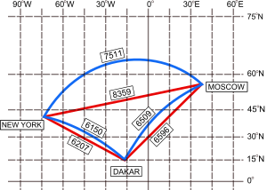
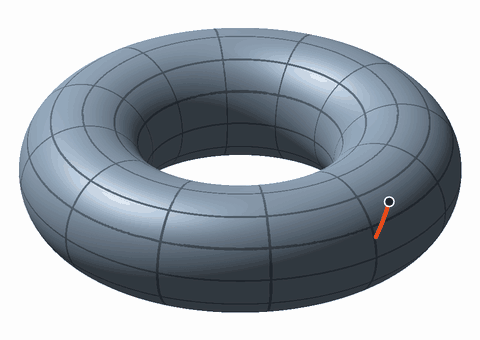
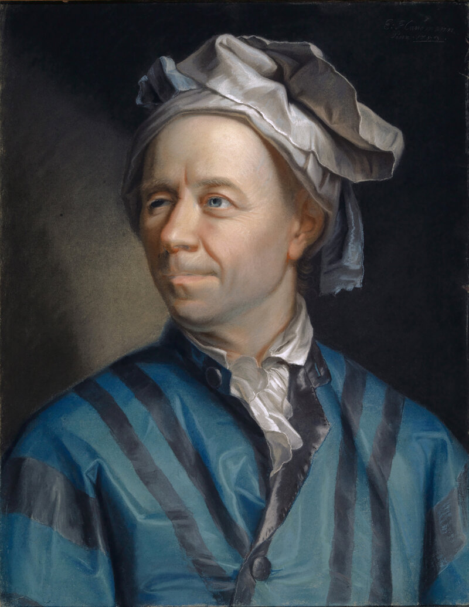

곡면 위의 직선은 뭔가
출발 문제
서울에서 뉴욕까지 비행기를 타 본 적이 있다면, 좌석 앞 모니터에 뜬 비행경로가 이상하게 북쪽으로 크게 휘어져 있는 것을 봤을 것이다. 알래스카 근처를 지나가는 이 경로는 세계지도 위에 직선으로 그은 경로보다 훨씬 “돌아가는” 것처럼 보인다. 하지만 사실 이것이 최단경로다.

비밀은 메르카토르 도법에 있다. 메르카토르 지도는 구면을 평면에 펼치는 과정에서 고위도 지역을 크게 늘린다. 그린란드가 아프리카만 해 보이는 것이 그 증거다. 이 왜곡된 지도 위에서의 "직선"은 실제 구면 위에서는 직선이 아니다. 진짜 최단경로는 대원(great circle) — 구의 중심을 지나는 평면이 구면과 만나는 원 — 의 호이며, 메르카토르 위에서는 이것이 휘어져 보인다.
이 사실은 근본적인 질문을 던진다: 곡면 위에서 "직선"이란 도대체 무엇인가? 평면에서는 너무 당연해서 정의할 필요조차 느끼지 못하는 이 개념이, 휘어진 공간에서는 전혀 자명하지 않다. 실을 팽팽하게 당기면 직선이 된다고? 구면 위에서 실을 팽팽히 당기면 대원이 된다. 그러면 대원이 "구면 위의 직선"인가?
더 생각해 보면 질문은 복잡해진다. 안장 모양의 곡면에서는? 도넛(토러스) 위에서는? 곡면의 형태가 달라질 때마다 "직선"의 의미가 바뀐다면, 이 모든 것을 아우르는 통일된 정의가 있을까? 답을 찾기 위해, 평면에서 직선이 가진 성질을 분해해 보자.
패턴
유클리드 평면에서 직선의 성질을 곰곰이 생각하면, 두 가지 독립적인 특성이 보인다.
첫째, 직선은 최단경로다. 두 점 사이를 잇는 모든 곡선 중에서 길이가 가장 짧은 것이 직선이다. 이것은 "실을 팽팽히 당기면 직선이 된다"는 직관과 맞닿아 있다. 둘째, 직선은 가속도가 0인 곡선이다. 직선 위를 등속으로 달리는 자동차의 핸들은 돌릴 필요가 없다 — 가속도(방향의 변화율)가 0이다. 이것은 "관성의 법칙"과 같은 말이다: 외력이 없으면 직선으로 간다.
평면에서는 이 두 성질이 동일한 곡선(직선)을 정의하므로 구별할 필요가 없다. 하지만 곡면 위로 가면 이 두 성질을 별개로 일반화해야 한다. "최단경로"를 일반화하면 변분법의 문제가 된다 — 경로의 길이 범함수를 극소화하는 곡선을 찾아라. "가속도 0"을 일반화하면 미분방정식의 문제가 된다 — 접선벡터를 자기 자신을 따라 평행이동했을 때 변하지 않는 곡선을 찾아라.
기적 같은 사실은 이것이다: 레비-치비타 접속(계량과 양립하고 비틀림이 없는 유일한 접속)을 사용하면, 두 조건이 같은 방정식으로 모인다. 등속으로 달리는 곡선에 대해 "길이가 (가까운 경로들 중) 극값"이라는 조건과 "가속도 0"이라는 조건이 똑같은 미분방정식이 되는 것이다. 이 곡선이 바로 측지선이다. 구면에서는 대원이고, 원통에서는 모선과 수평 원, 그리고 나선이며, 평면에서는 당연히 직선이다. 단, 측지선이 늘 가장 짧은 길인 것은 아니다. 그 이야기는 아래 「정리」에서 다시 한다.

비유를 하나 들어 보자. 개미가 곡면 위를 걸어간다고 하자. 개미는 자기 발밑의 곡면만 느낄 수 있고, 3차원 공간에서 곡면이 어떻게 생겼는지는 모른다. 이 개미가 “가능한 한 직진하겠다” — 왼쪽으로도 오른쪽으로도 틀지 않겠다 — 고 결심하면, 개미가 걷는 경로가 바로 측지선이다. 개미는 자신이 직진하고 있다고 느끼지만, 3차원에서 바라보면 경로가 휘어져 있을 수 있다. 이것이 "곡면 위의 직선"의 핵심이다.
정리
리만 매니폴드 위에서, 레비-치비타 접속에 대해 접선벡터의 공변미분이 0인 곡선은 국소적으로 거리를 최소화한다. 이 곡선을 측지선이라 부르며, 좌표로 표현하면 다음 방정식을 만족한다:
이 측지선 방정식을 한 항씩 읽어 보자.
이 방정식은 2계 상미분방정식이므로, 초기 위치
주의할 점이 하나 있다. 측지선은 국소적으로 최단이지 전역적으로 최단일 필요는 없다. 구면에서 두 점을 잇는 대원의 호는 두 개가 있는데(짧은 쪽과 긴 쪽), 둘 다 측지선이지만 짧은 쪽만 진짜 최단경로다. 이것은 직선도 마찬가지다: 직선의 아주 짧은 조각은 항상 최단이지만, 매니폴드의 위상에 따라 전역적으로 더 짧은 경로가 존재할 수 있다.
따라 계산해 보기 — 적도는 측지선이고 위도선은 아니다
반지름 1인 구면을 구면 좌표
- 적도
, : 이고 이라 첫 식이 성립한다. , 이라 둘째 식도 성립한다. 측지선이다. - 자오선
가 상수, : , 이라 두 식이 모두 성립한다. 측지선이다. 구의 회전은 거리를 바꾸지 않으므로 적도나 자오선을 기울인 모든 대원도 측지선이다. - 위도선
: 속력이 1이 되려면 이어야 한다. 둘째 식은 성립하지만, 첫 식의 좌변은 로 0이 아니다.
이 남는 값
정의
- 측지선 (관성의 길 / Inertial Path) — 접선벡터를 자기 자신을 따라 평행이동해도 변하지 않는 곡선, 즉
을 만족하는 곡선. 직관적으로, 곡면 위에서 핸들을 돌리지 않고 직진하는 경로다. 구면에서는 대원, 원통에서는 직선과 나선, 평면에서는 직선이 된다. - 측지선 방정식 (관성의 방정식) —
. 크리스토펠 기호 가 좌표 격자의 휘어짐을 담으며, 이 항이 0인 직교좌표에서는 직선의 방정식 으로 돌아간다. - 지수 사상 (방향 발사기 / Direction Launcher,
) — 접선공간의 벡터 를 받아, 에서 속도 로 출발한 측지선을 시간 1만큼 따라간 점을 돌려주는 함수. 접선공간(평면)과 매니폴드(곡면)를 잇는 다리다. 가 작을 때는 접평면을 곡면에 거의 그대로 붙인 것처럼 거리와 방향이 보존되지만, 가 커질수록 곡률 때문에 평면에서의 예상과 달라진다. 구면에서는 길이 인 가 모두 대척점 한 곳으로 모인다. 대포를 쏘는 것과 같다 — 방향과 힘(속도)을 정하면 착탄점이 결정된다.
핵심 인물과 일화
요한 베르누이 (Johann Bernoulli, 1667–1748)

1696년 6월, 요한 베르누이는 유럽의 수학자들에게 도전장을 던진다. Acta Eruditorum 학술지에 실린 문제: “중력 하에서 한 점에서 다른 점까지 가장 빠르게 미끄러지는 곡선은 무엇인가?” 이것이 유명한 최속강하선(brachistochrone) 문제다.
이 문제는 단순히 최단거리를 묻는 것이 아니었다. 직선으로 미끄러지면 처음에 가속이 느리다. 처음에 급경사를 타고 속도를 얻은 뒤 완만하게 이동하는 것이 더 빠를 수 있다. 베르누이는 답이 사이클로이드임을 알고 있었지만, 다른 수학자들이 풀 수 있는지 궁금했다.
뉴턴, 라이프니츠, 로피탈, 그리고 형 야코프 베르누이가 각자 해를 보냈다. 뉴턴은 익명으로 풀이를 보냈지만, 베르누이는 "발톱 자국으로 사자를 알아볼 수 있다(ex ungue leonem)"라며 저자를 알아챘다고 한다.
레온하르트 오일러 (Leonhard Euler, 1707–1783)

최속강하선 문제는 전혀 새로운 유형의 수학적 질문을 열었다: 숫자가 아닌 함수를 최적화하는 문제. 이 문제 유형을 체계적 이론으로 완성한 사람이 오일러다.
오일러는 1744년 Methodus inveniendi lineas curvas(곡선을 구하는 방법)에서 변분법의 기초를 세운다. 핵심 결과는 오늘날 오일러-라그랑주 방정식으로 불리는 것이다: 범함수를 극값으로 만드는 곡선은 특정 미분방정식을 만족해야 한다.
이것이 측지선과 무슨 관계인가? "곡면 위에서 두 점 사이의 최단경로를 구하라"는 문제는 정확히 변분법의 문제다. 길이
에너지를 극소화하는 곡선은 저절로 등속이 되고 길이도 극소가 된다. 이 범함수에 오일러-라그랑주 방정식을 적용하면 측지선 방정식이 그대로 튀어나오고, 이때 계량의 미분을 모은 계수가 바로 크리스토펠 기호다.
"가장 빠른 미끄럼 경로가 무엇인가?"라는 물리학적 호기심이, 결국 "휘어진 공간 위의 직선이 무엇인가?"라는 기하학의 핵심 질문에 대한 답을 낳은 셈이다. 베르누이의 도전장에서 시작된 이 여정은, 1세기 뒤 리만의 매니폴드 위에서 완성된다.
직접 움직여 보기
왼쪽은 메르카토르 지도, 오른쪽은 끌어서 돌릴 수 있는 지구본이다. 두 도시를 고르면 대원(측지선)과 등각항로(지도 위의 직선)가 함께 그려진다. 「지점」 슬라이더로 경로 위의 한 점을 골라, 그 점에서 측지선 방정식의 두 항이 서로 상쇄되는지 확인해 보자. 대원에서는 합이 0이 되고, 등각항로에서는 0이 되지 않는다.
연습문제와 같이 풀기
각 문제를 먼저 혼자 풀어 본 뒤, 바로 아래 세션에서 선생님과 두 학생이 어떻게 풀어 가는지 따라가 보자.
문제 1 — 원기둥 위의 나선은 직선인가
확인 원기둥 옆면 위의 세 곡선 (가) 세로 모선 (나) 수평 원 (다) 일정한 기울기로 감아 올라가는 나선 중 측지선인 것을 모두 고르라.
같이 풀기 세션 1
김민준(가)랑 (나)요. 나선은 3차원에서 보면 빙빙 꼬이잖아요. 그걸 직선이라고 하긴 좀 그렇죠.
이서연원기둥을 한 줄 잘라서 펴 봐. 나선은 직사각형 위의 비스듬한 직선이 돼.
선생님민준 학생, 원기둥 위를 기어가는 개미는 3차원을 볼 수 있을까요?

김민준아니요, 발밑밖에 못 보죠. 펴 놓으면 직선이니까 개미는 한 번도 안 꺾은 거고… 셋 다 측지선이네요. 수평 원도 펴면 가로 선분이고요.
선생님맞아요. 3차원에서 휘어 보이는 건 곡면이 휘어서지, 곡선이 방향을 튼 게 아니에요.
김민준발표 자료에 그래프를 로그 스케일로 붙였더니 조교님이 "곡선이 휜 게 아니라 축이 휜 거"라고 하셨던 거랑 같네요.
문제 2 — 북위 60°를 따라 걷는 사람의 핸들
계산 지구를 반지름 6,371 km인 구로 보자. (가) 북위 60° 위도선을 따라 등속으로 걷는 것은 측지선인가? 아니라면 반지름 1인 구에서 속력 1로 걸을 때 매 순간 꺾어야 하는 양(측지 곡률)은 얼마인가? (나) 북위 60° 위의 경도 0° 지점과 경도 180° 지점 사이의 거리를, 위도선을 따라갈 때와 대원을 따라갈 때 각각 구하라.
같이 풀기 세션 2
김민준(가)는 측지선이요. 위도를 계속 60°로 유지하면서 동쪽으로 쭉 가잖아요. 방향을 한 번도 안 바꿨는데요.
이서연그럼 식에 넣어 보자.
선생님서연 학생, 같은 방법으로 북위 30°(

이서연
선생님

이서연아니요. 속력이
이서연극한 계산할 때 변수를 정규화 안 하고 비교하다가 해석학 조교님께 “단위부터 맞추세요” 소리 들은 거랑 같아.

김민준그런데 난 핸들 안 꺾었다니까? 계속 동쪽으로 갔는데.
선생님민준 학생이 북위 60°에서 동쪽을 보고 서 있다고 해 봐요. 그 방향으로 대원을 따라 똑바로 가면 위도가 어떻게 돼요?
김민준…적도 쪽으로 내려가네요. 대원은 적도를 두 번 지나니까요. 60°를 계속 유지하려면 계속 왼쪽, 북극 쪽으로 틀어야 하는 거고요. "동쪽"이라는 방향 자체가 걸을 때마다 돌아가서 제가 틀고 있다는 걸 못 느낀 거예요.
김민준(나)는 numpy로 했어요. 위도선은 반원이니까
문제 3 — 측지선은 언제까지 가장 짧은가
킬러 (가) 서울에서 대원을 따라 25,000 km를 간 경로는 최단경로인가? (나) 서울에서 대척점(지구 반대편 정반대 점)까지 대원을 따라 가는 약 20,015 km의 경로는 최단경로인가? 최단경로는 하나뿐인가?
같이 풀기 세션 3
김민준둘 다 최단이죠. 측지선은 최단경로라고 배웠잖아요.
선생님민준 학생, 지구 둘레가 몇 km예요?
김민준약 40,030 km요. 그럼 25,000 km를 갔으면… 반대 방향으로 가면 40,030 − 25,000 = 15,030 km밖에 안 되네요.
김민준측지선인데 최단이 아니라고요? 핸들을 한 번도 안 꺾었는데요?
선생님측지선은 “가까운 경로들 중에서” 짧은 거예요. 조금만 흔들어 본 경로보다는 짧지만, 완전히 다른 쪽으로 도는 경로까지 이긴다는 보장은 없어요.
이서연(가)는 최단이 아니고, 그럼 (나)는 대척점까지니까 짧은 쪽 호 그 자체잖아. 최단이고, 최단이면 하나뿐이야. 강볼록 함수의 최솟점은 유일하다고 배웠거든.
선생님서연 학생, 서울에서 북쪽으로 출발한 대원과 남쪽으로 출발한 대원은 각각 어디로 가요?

이서연둘 다 대척점으로 가요. 동쪽으로 출발해도, 어느 방향으로 출발해도 반 바퀴 가면 전부 대척점에서 만나요. 길이도 전부 20,015 km로 같고요. 최단경로가 무한히 많아요.
이서연길이 범함수는 볼록하지 않구나. 구면이 둥글어서 경로 공간이 휘어 있으니 유일성을 공짜로 얻을 수 없는 거야.
선생님맞아요. 한 점에서 나간 측지선들이 다시 한 점에 모이는 곳을 켤레점이라고 불러요. 측지선은 켤레점에 닿기 전까지만 가까운 경로들보다 짧아요. 구면에서는 켤레점이 바로 대척점이라서 (가)의 경로는 대척점을 지나는 순간 최단 자격을 잃었어요.

김민준그러니까 측지선은 "지금 당장은 직진이 제일 빠르다"는 뜻이지, "끝까지 제일 빠르다"는 뜻은 아니네요!
김민준PyTorch 과제에서 처음 기울기 방향으로 계속 밀고 나갔더니 loss가 줄다가 어느 순간부터 다시 늘었던 거랑 비슷해요. 처음에 제일 좋은 방향이 끝까지 제일 좋은 방향은 아니었어요.

선생님원기둥에서도 생각해 볼 만해요. 한 점에서 바로 위의 점까지 가는 나선 측지선은 몇 바퀴 감느냐에 따라 무수히 많은데, 그중 최단은 감지 않는 세로 모선 하나예요.
연결되는 세계들
| 분야 | 연결 |
|---|---|
| 일반상대론 | 자유낙하 = 시공간의 측지선, 중력은 시공간의 휘어짐 |
| 최적화 | 리만 최적화: 매니폴드 위에서의 경사하강법 |
| 정보기하학 | m-측지선 vs e-측지선: 접속이 다르면 "직선"이 다르다 |
| 컴퓨터 비전 | 형상 공간에서의 측지거리 |
| 변분법 | 오일러-라그랑주 방정식의 기하학적 해석 |